iOS如何使用TestFlight进行App-Beta版测试
在2014WWDC中库克用了20秒的时间，简短的3句话，介绍了测试版本的TestFlight服务。TestFlight用于将Beta版测试，TestFlight已经被苹果收购，所以不要担心存在第三方测试造成数据泄露问题。TestFlight需要iOS8及以上版本的iOS设备才能运行，所以iOS7及之前的设备就不能安装了。TestFlight整合进了iTunes Connect，开发者可以通过电子邮件来邀请测试员来进行测试，这样开发者就可以更简单地让你的同行非同行、你的上级、你的客户、你所想要一起参与测试的人一起来测试应用。
TestFlight的测试方式分为两种：
一种是内部测试；
一种是外部测试。
从功能上讲，这两种方式都可以为测试人员在测试阶段对你的App进行测试。但是既然分了内部测试和外部测试，他们肯定还是有区别的，所谓的内部主要是指iTunes Connect上在你的开发团队里参与技术开发或者管理的成员。最多可以邀请25个内部成员，而与之相对的外部测试，指的是那些不属于你的团队或者公司的测试者，外部测试人员的上限是2000人。这里有一点需要注意的是，在你邀请外部成员参与测试之前，需要先通过苹果的审核，一般审核会在一天左右。而这一限制在内部成员上就没有，也就是说只要你把你的App上传到iTunes Connect上之后内部成员就可以开始进行内部测试了，无需审核。在邀请发出后，有效测试时间为60天。
ps：
1、现在公司也有使用比较老的测试方法，就是需要提供参与app测试人员的设备UDID，并且开发者需要将这些设备的UDID添加到开发者中心，每次有新的测试人员加入，需要重新生成profiles，重新打包，最可恶的是，只能添加100台设备的限制，总体来说，比较笨拙。
2、使用TestFlight测试的好处，只需要参与app测试人员提供一个邮箱，开发者登录iTunes Connect，给测试者发送邀请，测试者接受邀请，然后通过TestFlight，下载安装程序。不需要用户提供设备的UDID，最重要的一点是没有了100台设备的限制，一般内部测试人员最多25个人，外部测试人员最多2000个人，重点是不需要重新配置证书了，也不需要手动发送ipa包, 直接上传到iTunes即可。
3、然而，也有其他公司在使用蒲公英等其他参与测试。
接下来介绍一下TestFlight如何使用：
一、开发者需要做的事情
1、进入网址：https://itunesconnect.apple.com 输入账号密码登录iTunes Connect。
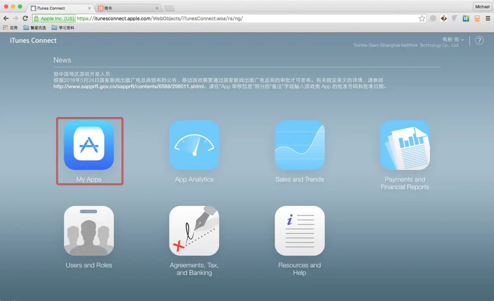
2、成功登录iTunes Connect，点击我的App，进入App列表页
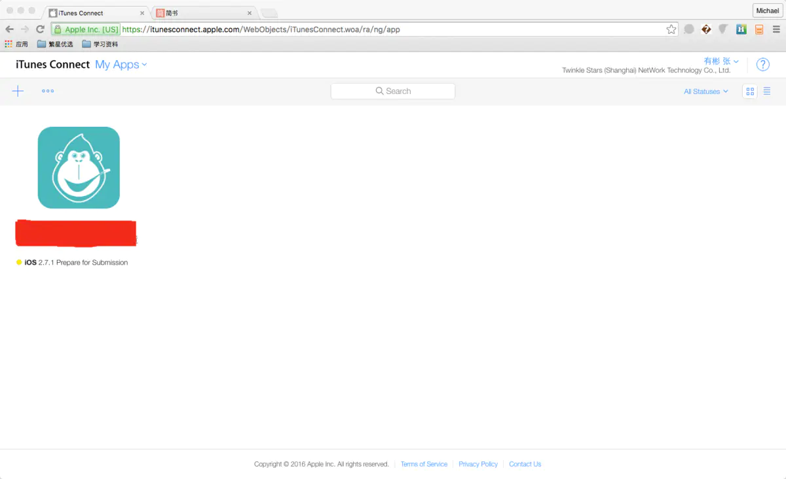
ps：如果是初次创建的 App，需要创建一个 iTunes Connect Record。如果你的 App 已经创建好了，可以直接跳过这段，如果你要新建一个 App 的话，可以按照下面的步骤来做：
(1)、登录 iTunes Connect 。
(2)、在 iTunes Connect 的首页，点击‘My Apps’图标。
(3)、开发者第一次进到这里的时候，这里是个空白页。点击左上角的‘+’号按钮，创建一个新的 App 。在你创建了 App 之后，这里会显示你创建的 App 列表。
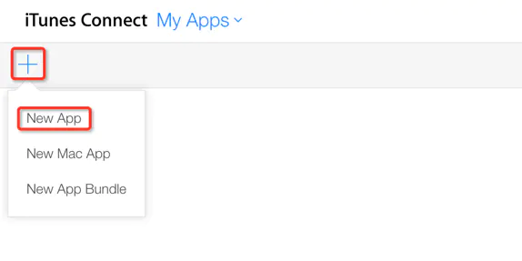
(4)、选择‘New App’。如果你只是 iOS 平台的开发者，这里不会出现其它的选项（如‘New Mac App’）。
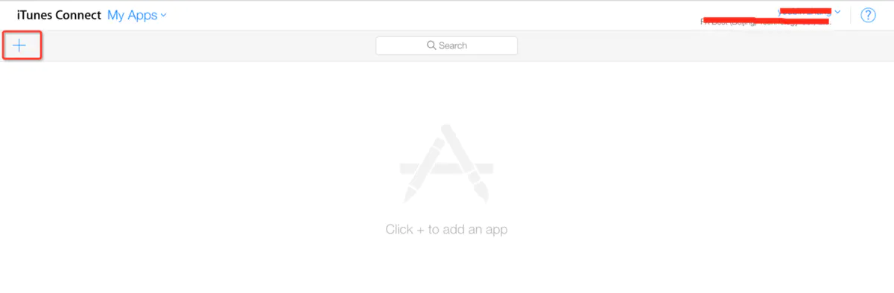
(5)、填写好如下弹窗内的信息，点击‘Create’按钮完成创建。
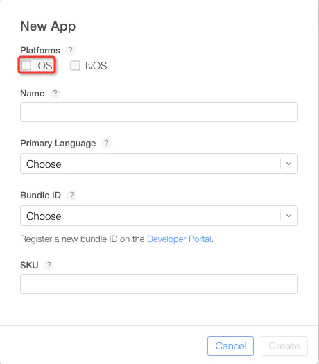
(6)、对于一些必填信息，如果未填写的话，Apple 会在对话框内给出如下提示：
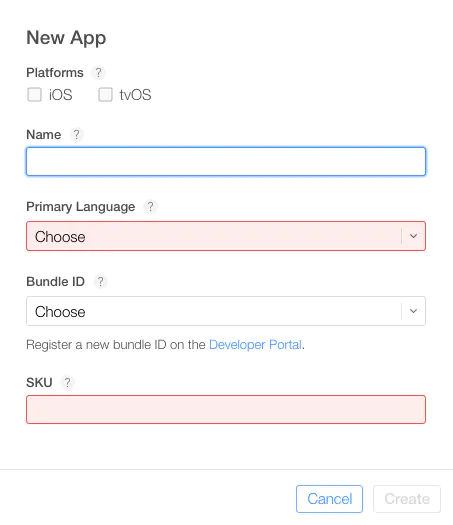
(7)、提交App到iTunes connect。
在 Xcode 中配置好版本和证书信息。
选中菜单‘Product->Archive’将当前代码归档，归档完成后会弹出‘Organizer-Archives’对话框。
选择‘Validate’按钮来检测该归档文件是否符合要求。
验证通过之后，你可以选择‘Submit’来提交这个归档。
3、每当你提交一个新的build之后，在 iTunes Connect的列表中都会对应的增加一个build。
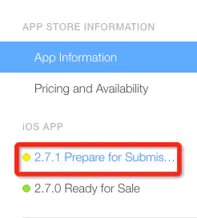
选择TestFlight，在TestFlight中填写基本信息接收反馈的邮箱地址，隐私政策网址等。
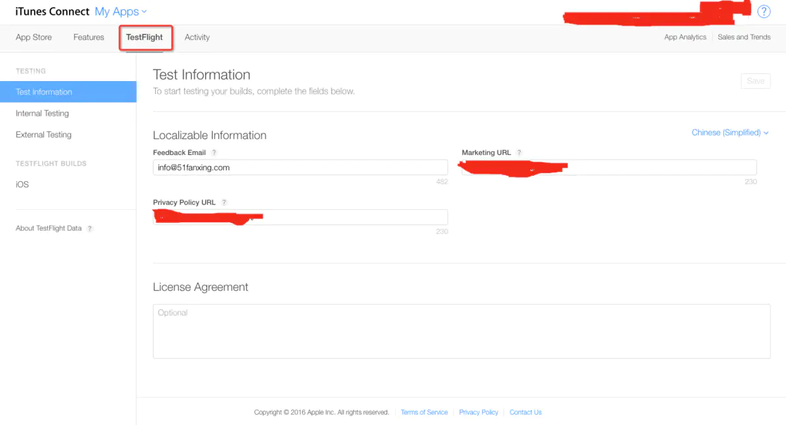
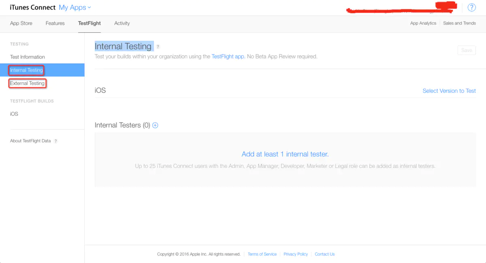
Internal Testing：内部测试
External Testing：外部测试
4、邀请测试人员
(1)、内部测试：
点击Internal Testers，添加测试人员（一般内部测试人员最多25个人）
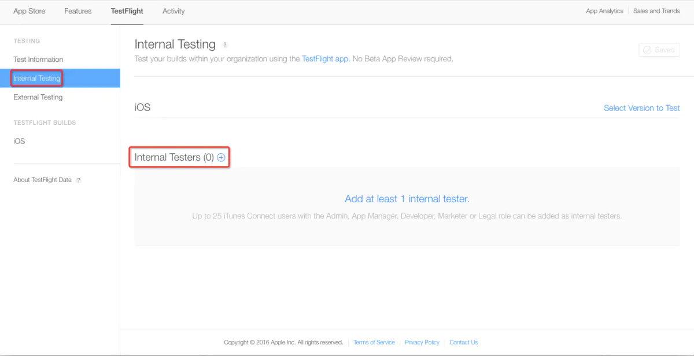
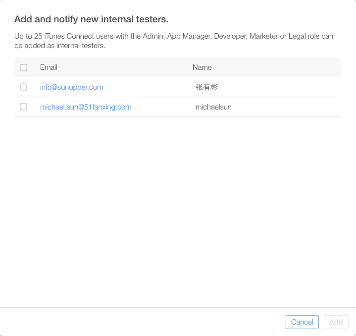

点击Select Version to Test，添加测试版本

选中一个版本，点击OK
点击save
点击Start Testing，之后会收到两封邮件，一封是邀请你加入测试组的邮件，点击同意即可，另一封是成功加入测试组的通知，点击start testing然后跳转到有加粗黑色字体的8个字母测试码的页面，下载TestFlight，然后点击Redeem，输入这8个字母即可下载测试app。
点击Start Testing

(2)、邀请外部测试人员

点击External Testers，选择添加新测试员，或者使用CSV批量导入邀请外部测试人员。

输入电子邮件，名称和姓氏可不填，点击添加。

点击Add Build to Test，添加测试版本
点击Next，进入下一步

填写测试版本的一些信息，点击Next，进入下一步

填写联系人信息，和 Beta App Review审核的测试账号，点击Next，进入下一步

填写审核信息，然后点击submit，提交 Beta 审核，目前来看，Beta 审核还是比较快速的，有时候一个工作日就可以通过审核。可能是现在使用 TestFlight 功能的 App 还不太多吧；不知道等 TestFlight 普及之后，随着参与 Beta Review 的 App 越来越多，Beta 审核还能不能一直这么快。
ps：还需要一提的是，外部测试人员想要参与测试的话，必须要 App 已经通过了 Beta App Review 才行。审核通过，点击Invite邀请按钮，测试者会收到来自TestFlight Beta Testing的邀请邮件。
二、开发者需要做的事情
1、在AppStore上面搜索“TestFlight”

2、下载TestFlight

3、打开TestFlight进行使用

ps：
(1)、应用提示是否允许“推送通知”，一般是允许的，提醒测试新版本；
(2)、这时候TestFlight内是没什么内容可看的；
(3)、等待开发者邀请测试。（注意查看关联Apple ID邮箱的邮件，2封邮件）
4、接受邀请iTunes Connect

ps：
(1)、打开邮箱邮件（电脑和手机操作都可以）；
(2)、点击邮件详情里面的“activate your access”，跳转到iTunes Connect登录页；
(3)、登录Apple ID账户，按提示勾选同意协议接受邀请。
(4)、这是第一封邮件，只有邀请加入开发者用户才会收到。只需要接受一次即可。


5、接受TestFlight测试邀请
(1)、打开邮箱邮件（电脑和手机操作都可以，推荐手机操作。）；
(2)、点击邮件详情里面的“Start Testing”；
(3)、打开“TestFlight”（手机操作第2步会自动打开TestFlight）；
(4)、在TestFlight显示App信息，可以接收测试邀请“Accept”。
ps：这是第二封邮件，只有邀请加入应用测试的才会收到。只需要接受一次即可。
电脑操作要有这3步：
(1)、Get TestFlight from the App Store
（翻译：到App Store下载TestFlight）
(2)、Open TestFlight and choose Redeem
（翻译：打开TestFlight选择Redeem）
(3)、Enter xxxxxx and start testing
（翻译：输入验证码，然后开始测试）

6、打开TestFlight，输入验证码，Install应用。


ps：安装完应用，会发现右侧有一个橘红色的点点。